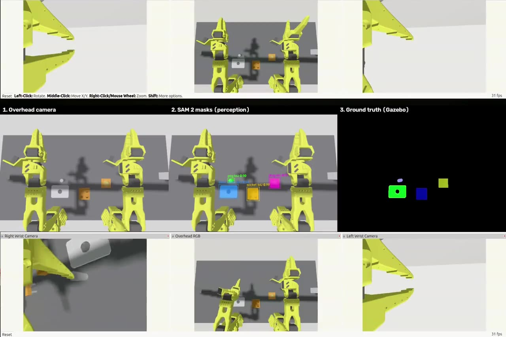

▶ presentSimulation · Dual-arm assembly
visionNassembly
Completed · working demo in simulation
Two SO-101 arms use an overhead RGB-D camera to find parts, estimate their 6-DoF pose to about 1 mm, and assemble a plug into a socket and a peg into a plate. It recovers from failures on its own. 11 of 12 randomised trials succeeded.